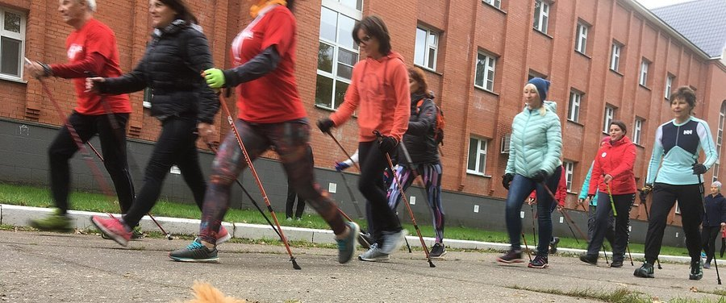

Strength Training for Women Over 40: Getting Started
Muscle and bone don't just fade on their own after 40. A lot of that decline is reversible. Here's what strength training actually does for women at this stage, and how to start without getting hurt.

Key takeaways
- Muscle mass declines gradually after 40 and the rate speeds up after menopause, but resistance training slows and partly reverses it.
- Strength training is one of the few proven ways to build bone density, which matters most as estrogen drops.
- Two to three sessions a week is enough for most beginners to see real strength and body-composition changes.
- It won't make most women "bulky." Lower natural testosterone levels limit how much muscle mass builds up.
- Starting later in life still works. Studies show measurable strength gains in women who begin in their 50s, 60s and beyond.
Strength training for women over 40 means lifting weights or using resistance two to three times a week to counter the natural loss of muscle and bone that speeds up around this age, especially after menopause. Done consistently, it improves strength, bone density, metabolism and balance, and most beginners notice real changes within 6 to 8 weeks.
Something shifts quietly in a woman's body starting in her late 30s and 40s: muscle mass begins to decline by roughly 3 to 8% per decade without targeted effort, and bone loss accelerates sharply once estrogen drops during and after menopause. None of that is a life sentence. Strength training is one of the few interventions with strong evidence for slowing, and in some cases partly reversing, both trends. It just needs to actually happen on a regular schedule, not as an occasional New Year's resolution.
What happens to women's muscle and bone after 40?
Muscle mass loss, called sarcopenia when it becomes significant, starts gradually in the late 30s and speeds up with age if nothing counters it. Bone density follows a related but separate path: women can lose up to 20% of their bone density in the five to seven years around menopause, driven by the drop in estrogen, which normally helps protect bone. Lower muscle mass and weaker bone together raise the risk of falls and fractures later in life, which is why this window matters more than it might feel like it does at 42 or 45.
How much strength training do women over 40 need?
Most current guidelines, including from the American College of Sports Medicine, recommend resistance exercise covering all major muscle groups at least twice a week. Two to three sessions of 30 to 45 minutes is realistic for most beginners and enough to produce measurable strength gains within a couple of months. More isn't automatically better; consistency across weeks and months matters far more than cramming in extra sessions.
What's a safe way to start strength training after 40?
Begin with bodyweight movements and light resistance to learn proper form before adding heavier loads. Squats, step-ups, modified push-ups, rows with a resistance band and glute bridges cover most of what a beginner needs. Progress gradually, adding weight or resistance only once a movement feels controlled and pain-free through its full range. A few sessions with a qualified trainer or physical therapist early on can correct form issues before they become habits.
Does strength training help with menopause symptoms?
Indirectly, yes, for several symptoms. Regular strength training is associated with better sleep quality, improved mood and steadier blood sugar during perimenopause and menopause, all of which tend to feel harder to manage during this transition. The evidence that it directly reduces hot flash frequency is weaker and inconsistent, so it's worth thinking of it as a broad support tool rather than a targeted fix for any single symptom.
Can strength training prevent osteoporosis?
It can meaningfully reduce the risk, though "prevent" is too strong a word for any single habit. Weight-bearing and resistance exercise stimulates bone to maintain or build density, particularly in the hip and spine, two of the most fracture-prone sites after menopause. Combined with adequate calcium and vitamin D, it's one of the most evidence-backed non-drug strategies for bone health available. Women with an existing osteoporosis diagnosis should still check with a doctor before starting, since some high-impact or spine-flexion movements may need to be modified.
Is strength training safe for painful or arthritic joints?
Generally yes, and it often helps rather than hurts. Strengthening the muscles around a joint, particularly the knee and hip, tends to reduce the load the joint itself has to absorb during daily movement. Start with a lighter range of motion and lower resistance around a painful joint, and build gradually. Sharp pain during an exercise is a signal to modify or stop that specific movement, not a reason to abandon training altogether.
How does strength training affect metabolism and weight?
Muscle tissue burns more calories at rest than fat tissue, so building and preserving muscle helps offset the gradual metabolic slowdown that tends to accompany aging. Strength training also improves insulin sensitivity, meaning the body handles blood sugar more efficiently, which becomes more relevant as metabolic changes pick up through the 40s and 50s. It's not a fast weight-loss tool on its own, but it changes body composition in ways cardio alone typically doesn't.
What should a beginner weekly routine look like?
A simple, sustainable split works better than an ambitious one that gets abandoned after two weeks. The table below is a reasonable starting template for someone new to resistance training.
| Day | Focus | Example moves |
|---|---|---|
| Day 1 | Lower body + core | Squats, glute bridges, step-ups, plank |
| Day 2 | Rest or light cardio | Walking, swimming, stretching |
| Day 3 | Upper body + core | Rows, push-ups (modified), overhead press, dead bug |
| Day 4 | Rest or light cardio | Walking, cycling, yoga |
| Day 5 | Full body | Deadlift pattern, lunges, rows, shoulder press |
| Weekend | Rest / active recovery | Walking, mobility work |
When should you work with a trainer or doctor first?
Check in with a doctor before starting if you have osteoporosis, a heart condition, uncontrolled high blood pressure, or a recent injury or surgery. Working with a certified trainer, even for just a handful of sessions, is worth it for anyone unfamiliar with proper lifting form, since early coaching tends to prevent the kind of technique errors that lead to injury later. For strength training alongside other supports for this life stage, our guide to calcium and vitamin D for women over 50 covers the nutrient side of bone health in more detail.
Strength training after 40 isn't about chasing a dramatic transformation. It's closer to maintenance: showing up two or three times a week, adding a little resistance over time, and giving the body a reason to hold onto the muscle and bone it already has. The payoff shows up less in the mirror early on and more in how steady you feel on stairs, how well you sleep, and how your bloodwork looks a few years from now. If perimenopause symptoms are part of what's prompting the search for this, our piece on perimenopause symptoms and early signs is a useful next read, and the muscle you build now may pay off beyond the obvious; some research even links physical strength, like grip strength, to long-term brain health, as covered in our look at grip strength and cognitive decline.
Frequently asked questions
Will strength training make me bulky?
No. Women generally have far less testosterone than men, which limits how much muscle mass they build naturally. Most women who lift weights get firmer and leaner, not bulky, especially while eating at or near maintenance calories.
How soon will I see results from strength training?
Strength itself often improves within 2 to 4 weeks as your nervous system adapts. Visible changes in muscle tone typically take 6 to 8 weeks of consistent training, and meaningful bone density changes take months to years.
Is it too late to start strength training at 50 or 60?
No. Research consistently shows that women in their 50s, 60s and beyond who start resistance training gain strength and muscle mass, often at a similar relative rate to younger adults. Starting later still produces real benefits.
Should women over 40 lift weights every day?
No. Muscles need 48 hours to recover and rebuild after a strength session that works the same muscle group. Two to four sessions a week, with rest or light activity between them, is a more effective and sustainable pattern.
Do I need a gym membership to strength train?
No. Bodyweight exercises, resistance bands and a pair of adjustable dumbbells at home can deliver real strength gains, especially in the first year of training. A gym adds more equipment variety as you advance.
Can strength training help with hot flashes?
Evidence here is mixed and limited. Regular exercise, including strength training, is linked to better sleep and mood during perimenopause, but it hasn't been shown to reliably reduce hot flash frequency on its own.
What's better for women over 40, cardio or strength training?
Neither replaces the other. Cardio supports heart health and endurance; strength training builds and preserves muscle and bone, which cardio alone does not do. Most guidelines recommend combining both rather than picking one.
Related: Calcium and vitamin D for women over 50 · Perimenopause symptoms and early signs · Iron deficiency in women: signs and what to eat · How much protein you need after 50 · Women's Health hub
Image: Vijay.shivu / Wikimedia Commons / CC BY-SA 4.0